Part oneFun with filters
Finite difference operators: Dx = [1, 0, −1] and Dy = [1, 0, −1]ᵀ.
1.1 Convolution from scratch
Convolving an image f with a kernel h slides the flipped kernel over the image and takes a weighted sum at every position:
- Flip the kernel in both directions (otherwise it is correlation, which flips the sign of the Dx / Dy results).
- Zero-pad the image by half the kernel size on each side, so the output has the same size as the input.
- Four loops: over output pixels
(i, j)and kernel entries(m, n), one multiply-add at a time. - Two loops: over output pixels only; each kernel-sized window is multiplied with the kernel and summed with numpy.
Code (numpy only)
DX = np.array([[1, 0, -1]], dtype=np.float32)
DY = np.array([[1], [0], [-1]], dtype=np.float32)
def box_filter(size: int = 9) -> np.ndarray:
"""size x size averaging kernel (sums to 1)."""
return np.full((size, size), 1.0 / size ** 2, dtype=np.float32)
def zero_pad(image: np.ndarray, top: int, bottom: int, left: int, right: int) -> np.ndarray:
"""Surround the image with zeros: a new array with the image copied into its middle."""
h, w = image.shape
out = np.zeros((h + top + bottom, w + left + right), dtype=image.dtype)
out[top:top + h, left:left + w] = image
return out
def _prepare(image: np.ndarray, kernel: np.ndarray) -> tuple[np.ndarray, np.ndarray]:
"""Flip the kernel (convolution, not correlation) and zero-pad the image for a "same"-size output.
Same centring as convolve2d(mode="same"): kh // 2 rows on top, (kh - 1) // 2 below
(equal for odd kernels), and likewise for the columns.
"""
kh, kw = kernel.shape
flipped = kernel[::-1, ::-1]
padded = zero_pad(image, kh // 2, (kh - 1) // 2, kw // 2, (kw - 1) // 2)
return padded, flipped
def convolve_4loops(image: np.ndarray, kernel: np.ndarray) -> np.ndarray:
"""out[i, j] = sum over (m, n) of flipped[m, n] * padded[i + m, j + n], one multiply at a time."""
padded, flipped = _prepare(image, kernel)
h, w = image.shape
kh, kw = kernel.shape
out = np.zeros((h, w), dtype=np.float64)
for i in range(h):
for j in range(w):
total = 0.0
for m in range(kh):
for n in range(kw):
total += flipped[m, n] * padded[i + m, j + n]
out[i, j] = total
return out
def convolve_2loops(image: np.ndarray, kernel: np.ndarray) -> np.ndarray:
"""Same as convolve_4loops, but the two kernel loops become one array multiply-and-sum per pixel."""
padded, flipped = _prepare(image, kernel)
h, w = image.shape
kh, kw = kernel.shape
out = np.zeros((h, w), dtype=np.float64)
for i in range(h):
for j in range(w):
out[i, j] = np.sum(flipped * padded[i:i + kh, j:j + kw])
return outComparison with scipy.signal.convolve2d
Reference: convolve2d(image, kernel, mode="same", boundary="fill", fillvalue=0). All three run on my
selfie (grayscale, resized to 600 × 450).
| Kernel | Size kh × kw | Multiply-adds H·W·kh·kw | 4 loops | 2 loops | convolve2d | max |mine − scipy| |
|---|---|---|---|---|---|---|
| 9×9 box | 9 × 9 | 21,870,000 | 2.26 s | 276.7 ms | 14.3 ms | 1.1e-06 |
| Dx | 1 × 3 | 810,000 | 107.9 ms | 245.1 ms | 1.4 ms | 0.0e+00 |
| Dy | 3 × 1 | 810,000 | 119.1 ms | 246.4 ms | 2.2 ms | 0.0e+00 |
Runtime. All three compute the same H·W·kh·kw multiply-adds, O(H·W·k²): on the 600 × 450 selfie that is 21.9 million for the 9×9 box and 0.81 million for Dx / Dy. They differ in how much runs in Python:
- 4 loops: every multiply-add is a Python step, so the time grows with H·W·k² (2.26 s for the box).
- 2 loops: only H·W Python steps, each one numpy call on the window, so the time barely depends on the kernel (~276.7 ms). It is 8× faster than 4 loops for the box, but 2× slower for the 3-tap Dx / Dy, where one numpy call costs more than three Python multiply-adds.
- convolve2d: the same work in compiled code, 19–172× faster than my 2-loop version.
Boundaries. All three treat pixels outside the image as 0, so the results are identical up to floating-point
rounding. Zero fill has visible side effects: the box-blurred selfie darkens towards the frame, because the window averages
in zeros (56% brightness on the border, 31% in the
corners), and Dx / Dy fire along the image border, where the image "drops" to 0. convolve2d can instead use
boundary="symm" (mirror) or "wrap" (periodic), which avoid this; its default
mode="full" also returns an image larger by k − 1, so I use mode="same".
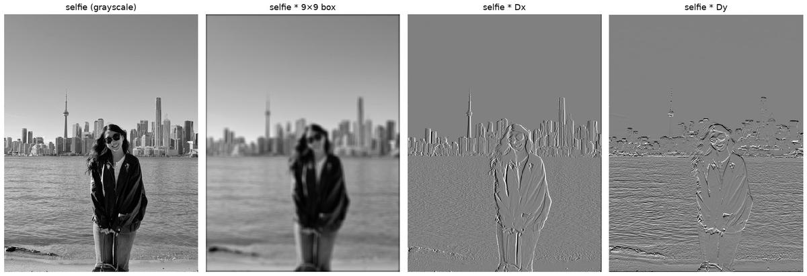
1.2 Finite difference operator
I use convolve2d with mirror padding (boundary="symm") so the image border isn't detected as an edge.
- Partial derivatives:
∂f/∂x = f * Dxresponds to vertical edges,∂f/∂y = f * Dyto horizontal ones. - Gradient magnitude:
|∇f| = √((∂f/∂x)² + (∂f/∂y)²), the edge strength in any direction. - Edge image:
|∇f| > threshold.
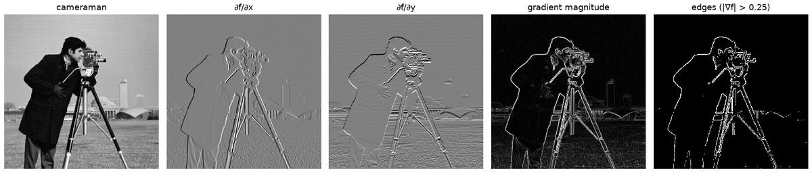
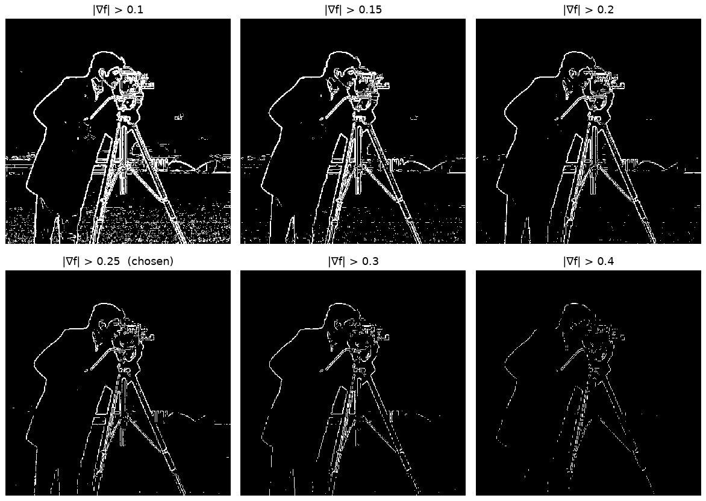
Threshold = 0.25. At 0.2 and below, the grass texture shows up as speckle noise. At 0.3 and above, the buildings disappear and the tripod legs break apart. 0.25 removes most of the grass while keeping the man, camera, tripod and buildings; I accept a few gaps in the thin tripod legs rather than lose the buildings.
1.3 Derivative of Gaussian (DoG) filter
The finite-difference edges in 1.2 are noisy, because differencing neighbouring pixels amplifies small changes such as the grass texture. Here I smooth the image with a Gaussian first, then compute the derivatives, either in two convolutions or in one with a combined derivative of Gaussian filter, and compare the edges with 1.2.
- Gaussian:
g = cv2.getGaussianKernel(11, 1.5),G = g gᵀ(11×11, σ = 1.5; the size covers ±3σ). - Two convolutions: blur the image with G, then repeat 1.2.
- One convolution: build the DoG filters
G * DxandG * Dy, then convolve the image once with each. Convolution is associative, so(f * G) * D = f * (G * D).
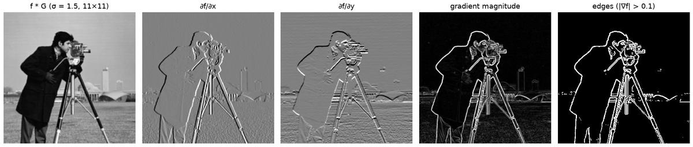
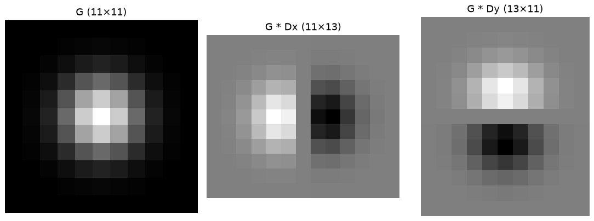
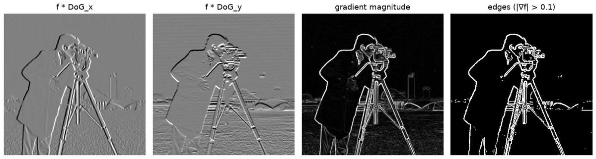
Same result. The one- and two-convolution gradients differ by at most 1.2e-15 (rounding), because convolution is associative: (f * G) * D = f * (G * D).
What differences do you see?
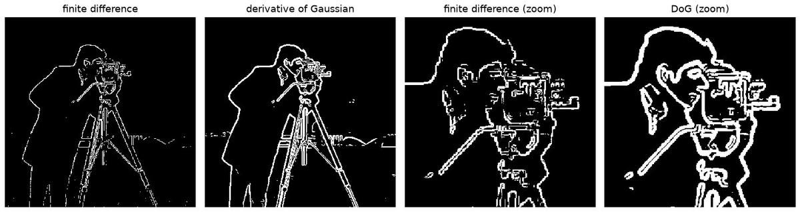
- Less noise: the blur removes the grass texture before differentiating, so the grass and sky are clean.
- Continuous edges: the outlines of the coat and tripod are unbroken instead of dashed.
- Thicker edges: the blur spreads each edge over a few pixels.
- Lower threshold (0.10, chosen with the same kind of sweep): blurring lowers the gradient values, but it lowers the noise even more.
Bells & whistles: gradient orientation
The gradient magnitude in 1.2 and 1.3 tells how strong an edge is. The gradient also has a direction: the vector
(∂f/∂x, ∂f/∂y) points across the edge, from the darker side towards the brighter side. This direction is the
gradient orientation, an angle θ between 0° and 360°. Angles wrap around and so does
the hue of the HSV color space (red → yellow → green → cyan → blue → magenta → back to red). I show
the orientation as hue: every direction gets its own color, and directions that are close get similar colors, with no
artificial jump.
- Compute the gradients. I use the DoG gradients from 1.3 rather than the raw finite differences. The direction is very sensitive to noise: in flat or textured areas the finite differences point in random directions, which would fill the image with random colors.
- Compute the angle without built-in angle functions. The deliverables don't allow
np.arctan2, so I compute θ myself from the gradient (x, y), using only arithmetic:- Reduce the problem to a small angle:
a = min(|x|, |y|) / max(|x|, |y|)is always between 0 and 1, so arctan(a) is between 0° and 45°. - Compute arctan(a) with a polynomial approximation (Abramowitz & Stegun 4.4.49), which is accurate to 1e-5 rad on this range.
- Recover the full angle from the signs and sizes of x and y: use 90° − angle if |y| > |x|, 180° − angle if x < 0, and the negative angle if y < 0.
θ = atan2(−∂f/∂y, ∂f/∂x). Then θ = 0° means "brighter to the right" and θ = 90° means "brighter upwards", as in a normal plot. - Reduce the problem to a small angle:
- Map to HSV.
- Hue = θ / 360°: the orientation.
- Saturation = 1: fully saturated colors, so the hues are easy to tell apart.
- Value = gradient magnitude (scaled so the 99th percentile is full brightness). Where the image is flat, the direction is meaningless, so those pixels stay dark and only real edges are colored.
matplotlib.colors.hsv_to_rgbconverts the image to RGB for display.
The figures below show the orientation with brightness = edge strength, the orientation on the DoG edge pixels from 1.3 only (each edge at full brightness), and a color wheel as the legend.
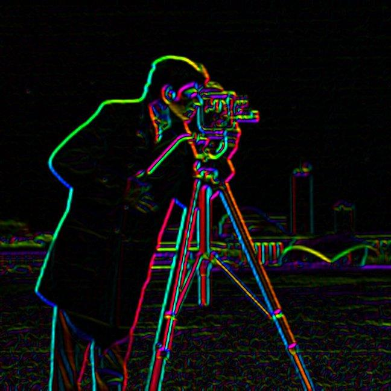
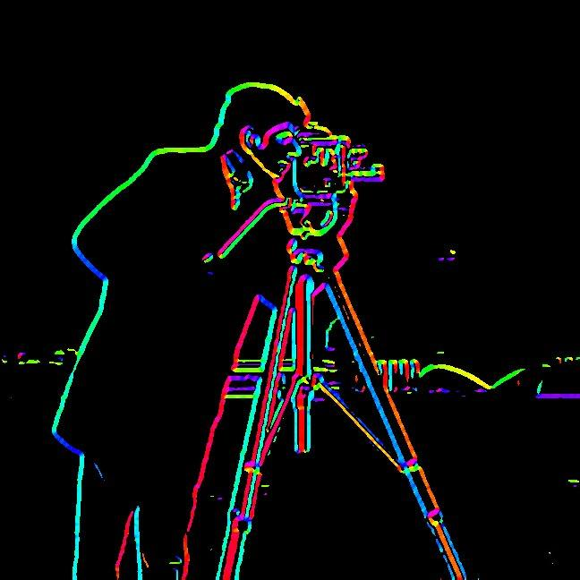
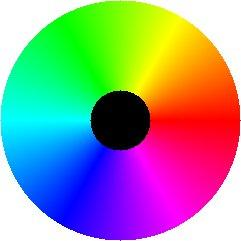
Reading the result. Each color is a direction, as on the wheel: red = brighter to the right, green-yellow = brighter upwards, cyan = brighter to the left, blue-purple = brighter downwards. The two sides of a tripod leg have opposite colors (e.g. red and cyan): the leg is darker than the background, so on one side the image gets brighter to the left and on the other to the right. The top of the man's head and shoulders is green-yellow, because the bright sky is above them.
Check. My arctan matches np.arctan2 to within 1e-05 rad on every pixel; np.arctan2 is used only for this check, not for the result.
Part twoFun with frequencies
2.1 Image "sharpening"
- Blur = low frequencies: a Gaussian blur is a low-pass filter, so
f * Gkeeps only the low frequencies of the image. - Original − blur = high frequencies:
f − f * Gis what the blur removed: edges and fine detail. - Sharpening: an image looks sharper when its high frequencies are stronger, so unsharp masking adds a multiple α of them back.
- One convolution: the two steps combine into a single filter:
- The filter:
(1 + α) e − α Gis a positive spike surrounded by a small negative Gaussian. - σ = 2 (13 × 13 kernel): wide enough that the high-frequency part contains real edges, not only pixel noise.
- α = 1.5, chosen in the sweep below.
- Color: each RGB channel is filtered separately.
- Check: the single filter matches the two-step version
f + α(f − f * G)to rounding error.
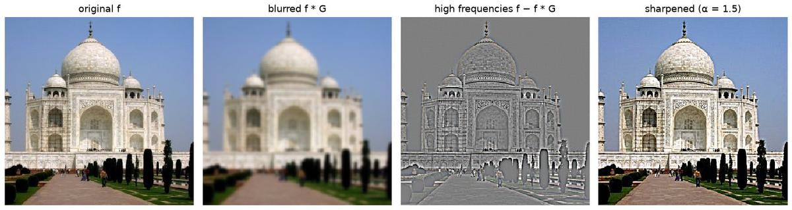
1.8e-15.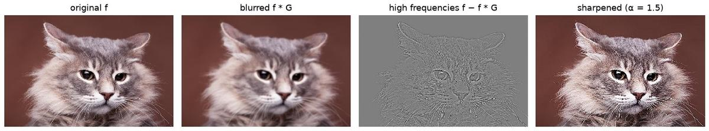
2.0e-15.Original vs. sharpened (drag the slider):
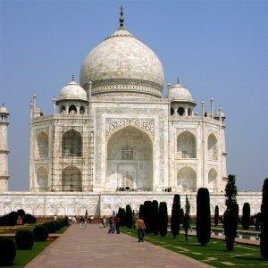
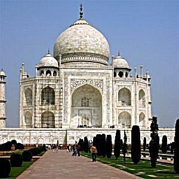
originalsharpened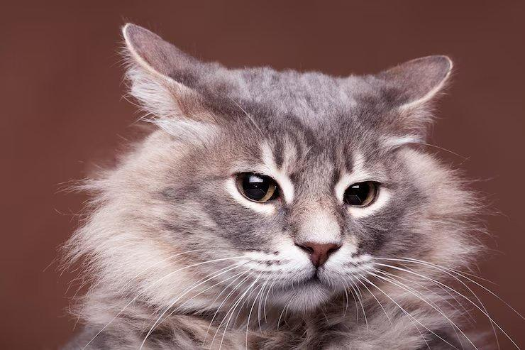
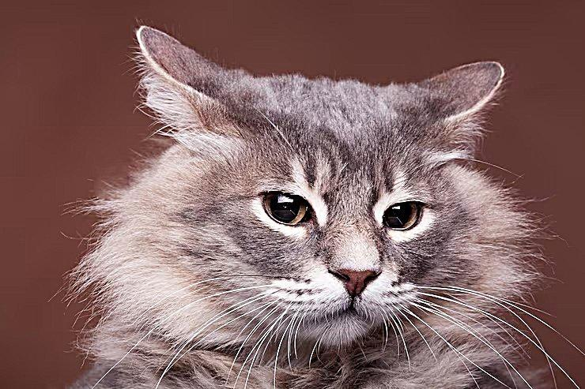
originalsharpenedVarying the sharpening amount α
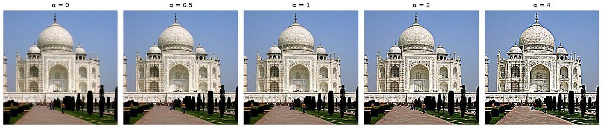
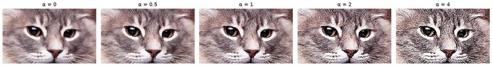
- α = 0: the original image.
- α = 0.5–1: edges and fur get crisper, and the image looks more in focus.
- (Choice) α = 1.5, clearly sharper than the original, before the over-processing and halos of α ≥ 2 appear.
- α = 2: the image starts to look over-processed.
- α = 4: the fur becomes harsh and noisy, bright details such as the whiskers clip to white, and halos appear along edges (the negative part of the filter overshoots on both sides of an edge).
- Why: sharpening boosts all high frequencies, including noise and JPEG artifacts, so too much of it amplifies those too.
Evaluation: blur a sharp image, then sharpen it again
I blurred a sharp photo of the Toronto skyline with the same Gaussian, sharpened the blurred version with increasing α, and compared each result with the original (PSNR: higher = closer to the original).
Observations
- Sharpening makes the blurred image look sharper and brings it closer to the original, but only up to a point: PSNR rises from 25.7 dB (blurred) to 26.8 dB at α = 2.
- At α = 4 it drops again to 26.2 dB, and bright halos appear around the CN Tower and the buildings.
- No α brings back the fine details the blur removed, such as the rows of windows and the thin antenna.
Why
- Blurring multiplies the high frequencies by values close to 0, so they are essentially gone.
- Unsharp masking can only amplify the high frequencies that are left; it cannot recreate lost ones.
- It increases the contrast of the edges that remain, which we perceive as sharpness, but it does not undo the blur.
2.2 Hybrid images
Up close, high frequencies dominate what we see; from far away, the eye can't resolve them and only the low frequencies remain. A hybrid image (Oliva, Torralba & Schyns, 2006) combines the low frequencies of one image with the high frequencies of another, so its interpretation changes with viewing distance:
- Align the two images, because the two interpretations only merge when their parts line up. For Derek and
Nutmeg I ported the starter's
align_images.m: I labelled the centres of the two eyes in each image manually; the code translates, scales and rotates Nutmeg so the eyes coincide, then crops both to the same size (keeping Derek's whole frame, so neither head is cut). My own two pairs were already aligned. - Low-pass the far image with a 2-D Gaussian (σ_low).
- High-pass the close image with the impulse minus a Gaussian (σ_high), i.e. the image minus its blurred version.
- Add the two. The high-pass part averages to zero, so the result keeps the brightness of the far image. As in the starter code, these results are in grayscale; color is explored in the bells & whistles.
Which image goes where: the close image should have strong, fine texture (fur, whiskers, spots), and the far image a clear overall shape and shading (a face).
Derek + Nutmeg, step by step
1. Original images and alignment
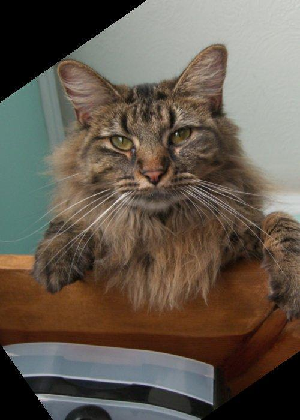
2. Filtered images
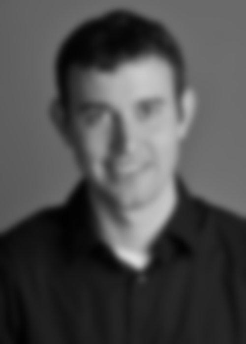
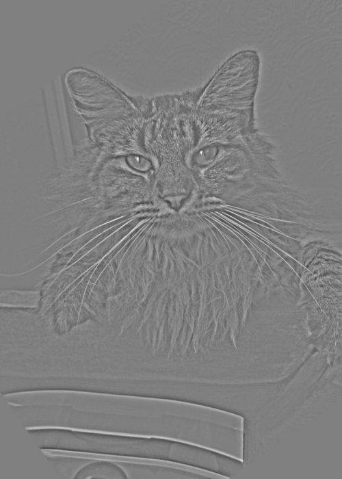
3. Frequency analysis
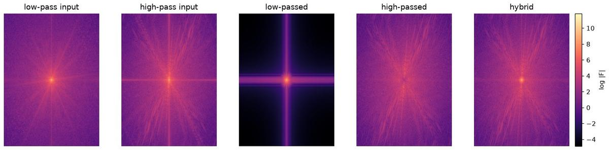
4. Choosing the cutoff frequencies
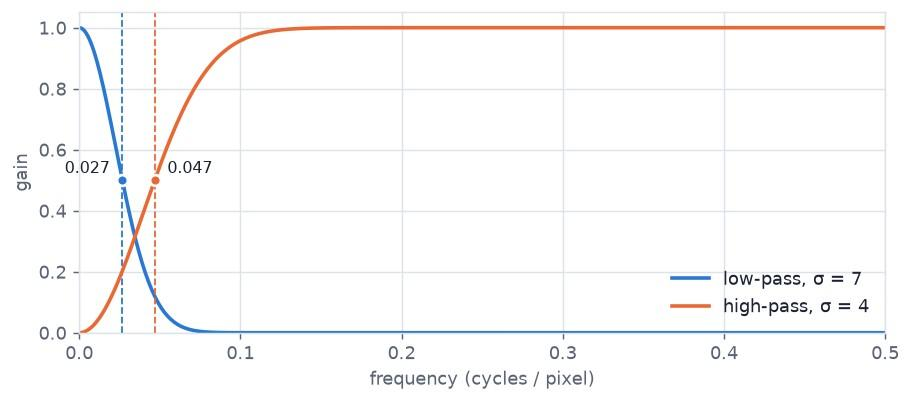
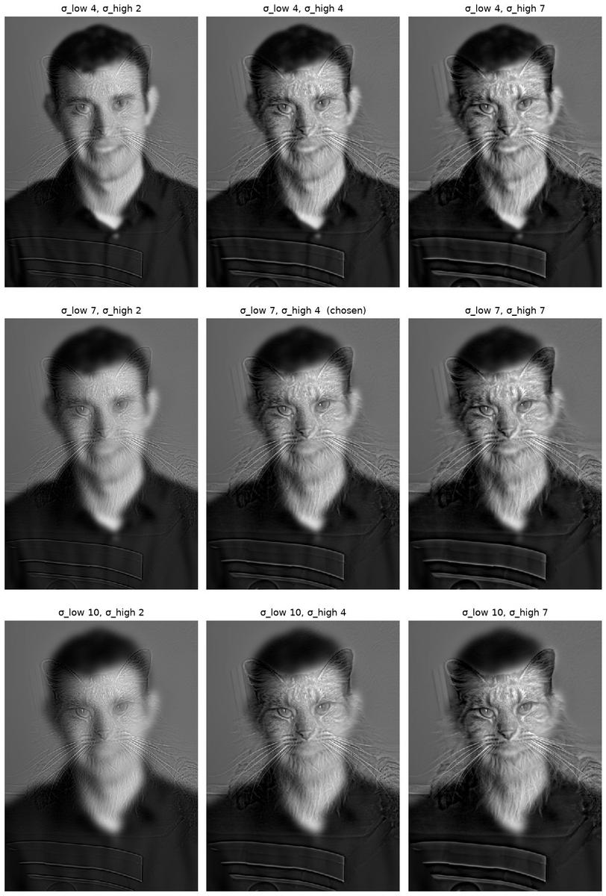
5. Hybrid image
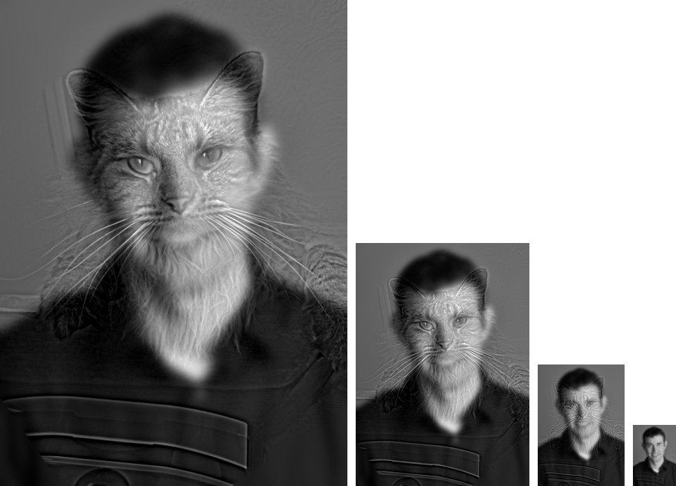
Reading the spectra
- The centre of each panel is frequency 0; the farther from the centre, the higher the frequency.
- Low-passed: only a small bright area in the centre is kept.
- High-passed: the opposite, dark in the centre and kept everywhere else.
- Hybrid: combines both, Derek in the centre and Nutmeg around it.
- The bright horizontal and vertical lines come from the image borders: the FFT treats the image as periodic, so the jump between opposite borders acts like an edge.
Cutoff frequencies
- Each filter's cutoff is the frequency where its gain is ½, which is 0.187 / σ cycles per pixel.
- σ_low: at 4, Derek's eyes and mouth stay sharp and compete with the cat up close; at 10, even those features are blurred away.
- σ_high: at 2, only the finest whiskers survive and the cat is faint up close; at 7, the cat's coarser fur shows through even from far away.
- Choice: σ_low = 7, σ_high = 4. This balances the two and puts the cutoffs at 0.027 and 0.047 cycles per pixel, leaving a gap where neither filter passes much, so the two images don't compete at the same scale.
My own hybrids
Each is shown with its two inputs and at shrinking sizes; shrinking removes high frequencies, which simulates stepping back. Up close you see the high-pass input, and in the smallest copy the low-pass one.
Cat + jaguar
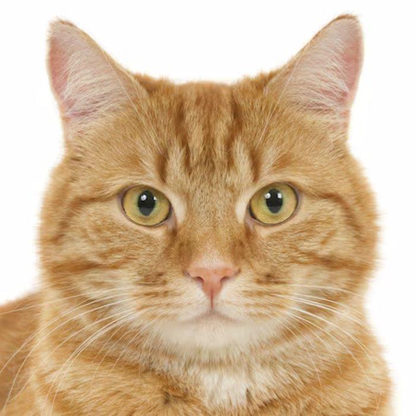
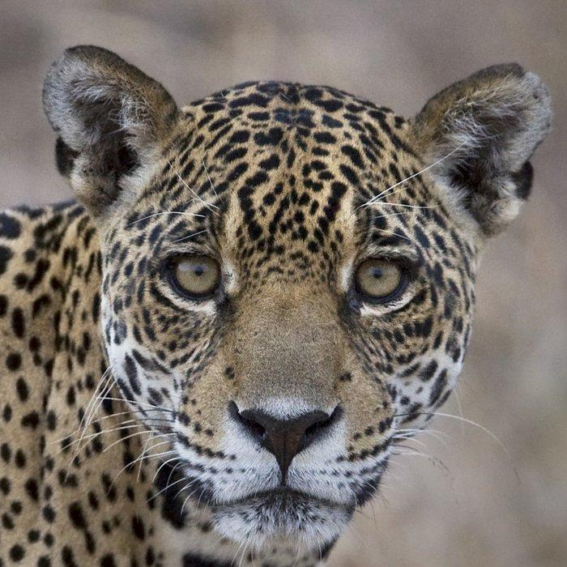
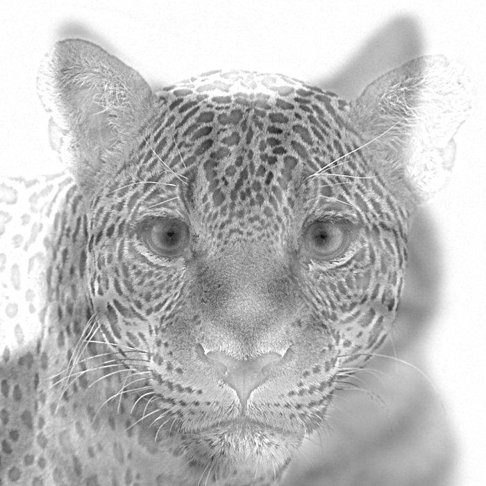
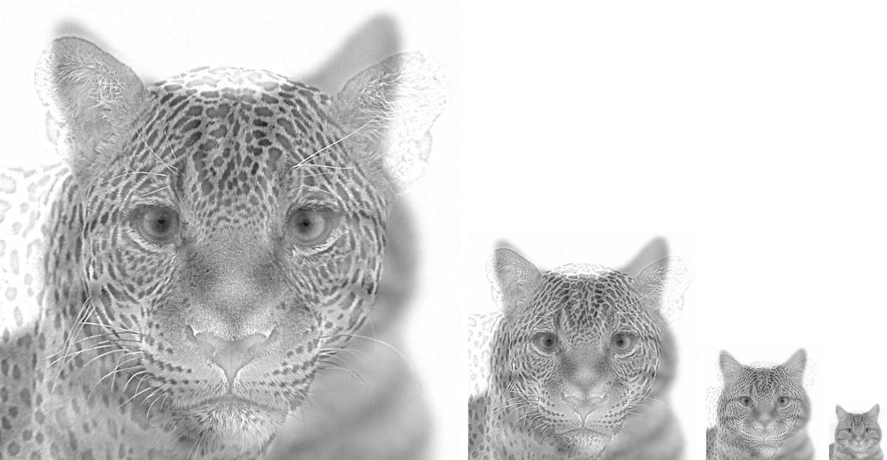
Maine coon + owl
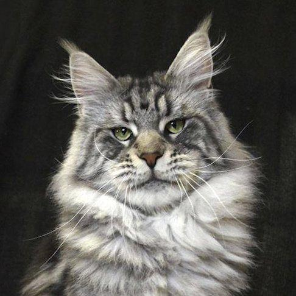
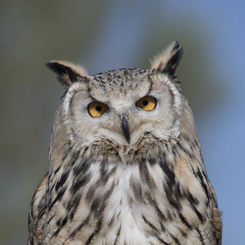
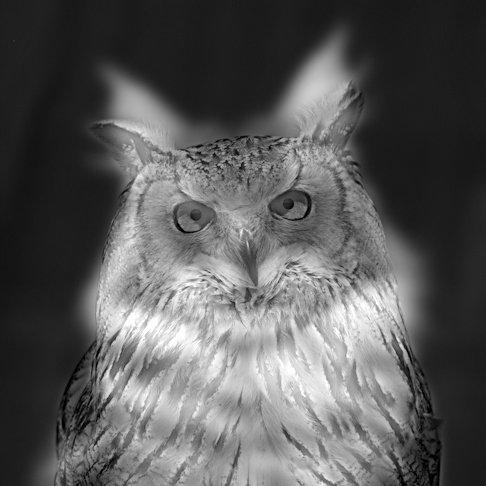
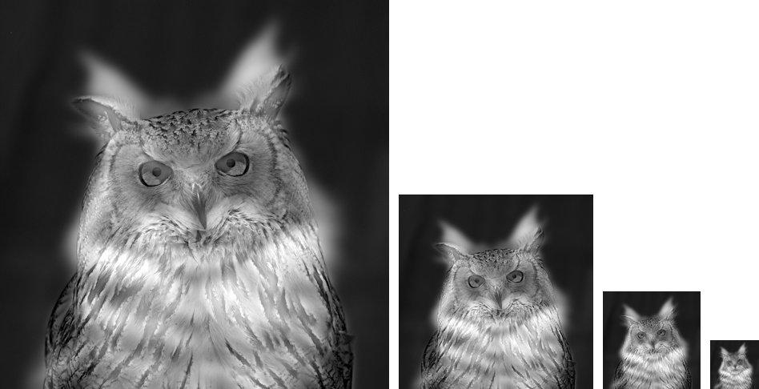
Choices
- Cutoffs: the same σ_low = 7, σ_high = 4, which worked for both pairs in the same kind of sweep.
- Cat + jaguar: the jaguar's spots are strong high frequencies and the smooth orange cat is a clean low-frequency face. The other way round, the cat has almost no texture to show up close.
- Maine coon + owl: the owl's crisp feathers go on top. With the cat's long fur as the high-pass image, the fur was visible from every distance.
- Weakness: in the cat + jaguar hybrid, the jaguar's textured background leaks onto the cat's plain white background as faint spots.
Bells & whistles: color hybrids
For each pair I compared four versions: each of the two components in grayscale or in color (in color, each RGB channel is filtered separately).
Color works best in the low-frequency component
- Color low + gray high: clearly better than grayscale. The orange cat, Derek's skin tone and the backgrounds return, and the far image reads as a natural photo, which strengthens that interpretation.
- Gray low + color high: looks almost identical to grayscale.
- Color both: looks almost the same as "color low".
Why
- Color comes in large smooth regions (fur, skin, background), so it lives in the low frequencies.
- Edges and texture are mostly changes in brightness, so the high-pass part of an image is nearly gray.
- Our eyes are also less sensitive to fine color detail than to fine brightness detail.
- The only visible high-frequency color is a small, saturated detail: the owl's amber eyes.
- Choice: color low + gray high, which gives almost all of the benefit and keeps the close-up texture clean.
2.3 Gaussian and Laplacian stacks
A stack is like a pyramid, but without downsampling: every level has the size of the original image. Both stacks are built from scratch with my Gaussian filter (no built-in pyramid functions).
- Gaussian stack:
G₀is the image, and each level blurs the previous one,Gi = Gi−1 * Gaussian(σ·2i−1), with σ = 2 and 6 levels. The σ doubles at each level so that the stack behaves like a pyramid, as the PDF asks: a pyramid applies the same filter to an image half the size, which is a filter twice as wide in original pixels. - Laplacian stack:
Li = Gi − Gi+1, the band of frequencies removed by each blur; the last level keeps the remaining low frequencies,L₅ = G₅. Summing all levels gives back the original image exactly.
Check: summing each Laplacian stack gives back the original image to within 1.1e-16.
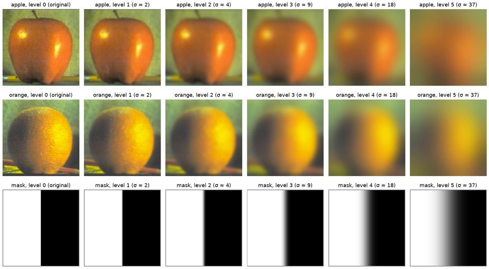
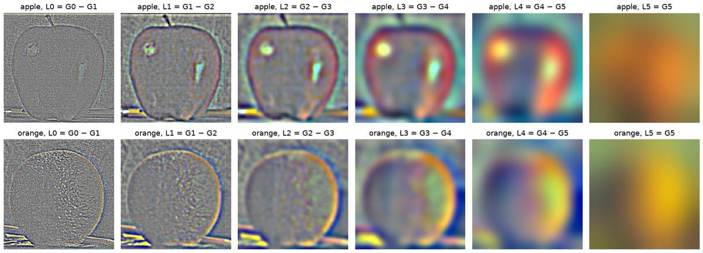
Figure 3.42 (a)–(l), recreated
Rows (a)–(c), (d)–(f) and (g)–(i) are Laplacian levels 0, 2 and 4: the apple weighted by the blurred mask, the orange weighted by one minus the mask, and their sum. Row (j)–(l) sums all levels; (l) is the oraple. The blending is described in 2.4.
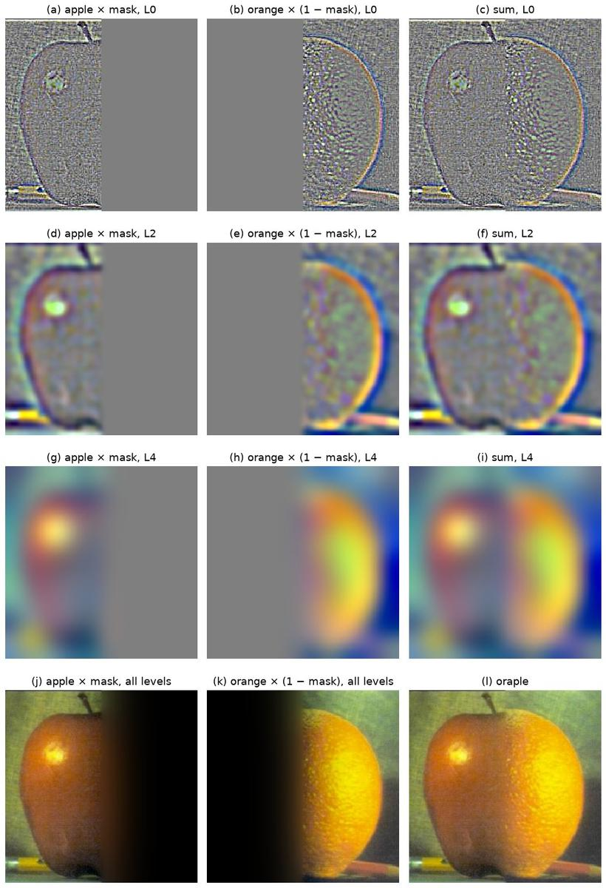
- Level 0: the mask is still almost a step, so fine details switch from apple to orange within a few pixels, too small to notice.
- Level 4: the mask is blurred by about 18 pixels, so the broad shading and the red-to-yellow color change blend over a wide band.
- Result: each band is joined over a width that matches its features, which is why the seam disappears.
2.4 Multiresolution blending
To blend image A and image B with a mask M (1 = take A), I use the algorithm on p. 230 of Burt & Adelson:
- LA, LB: the Laplacian stacks of the two images; GM: the Gaussian stack of the mask.
- Each frequency band is joined with a mask blurred about as much as that band, so fine details switch over a narrow band and colors over a wide one.
- Color images are blended one channel at a time.
Why the mask needs its own Gaussian stack
The PDF notes that the simpler algorithm on p. 226, a sharp seam at every level, fails with stacks: a pyramid's down- and upsampling blur the seam, but a stack doesn't. I compared it with other approaches on the oraple:
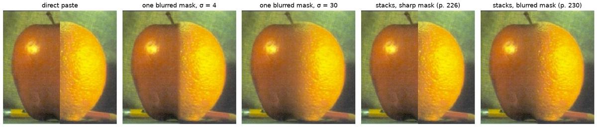
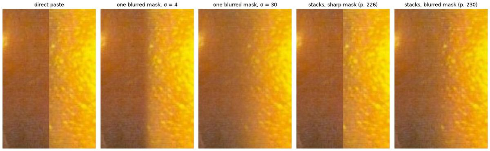
- Direct paste and stacks with a sharp mask both leave a hard vertical line: when every band is cut at the same place, the bands add up to a plain paste.
- One blurred mask, σ = 4: the line softens, but the red-to-yellow change is still a visible seam.
- One blurred mask, σ = 30: the color changes smoothly, but across the wide band both textures are visible at half strength, like a double exposure.
- Stacks with a blurred mask (p. 230): smooth color change and a sharp texture switch, which no single mask can give.
Results
The oraple (vertical seam), Earth + Mars (vertical seam, my images) and Doctor Strange's third eye (irregular mask, my images: a scaled copy of his eye placed on his forehead, inspired by the paper's eye-in-hand example in Figure 8).
Oraple
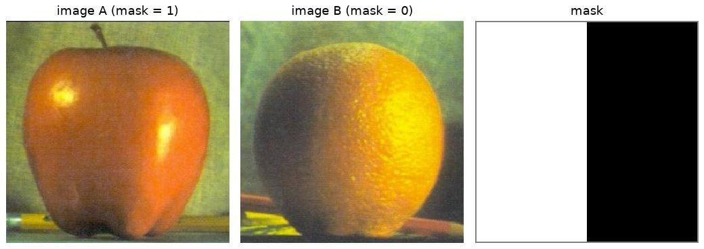
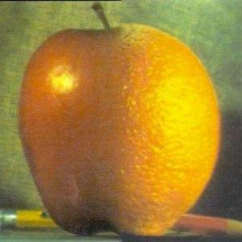
Earth + Mars
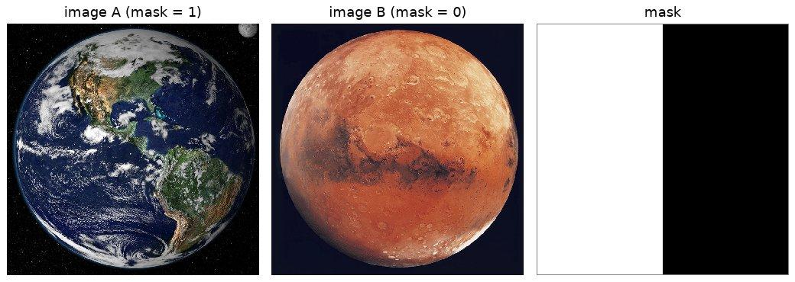
Doctor Strange's third eye
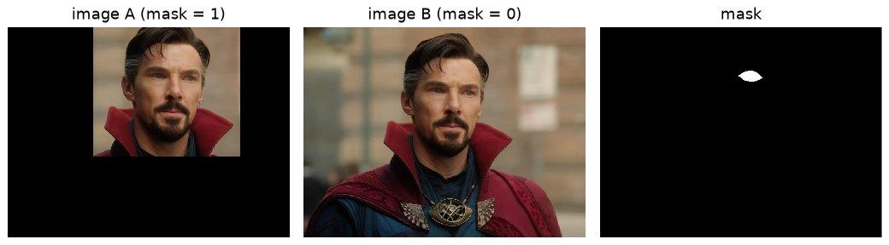
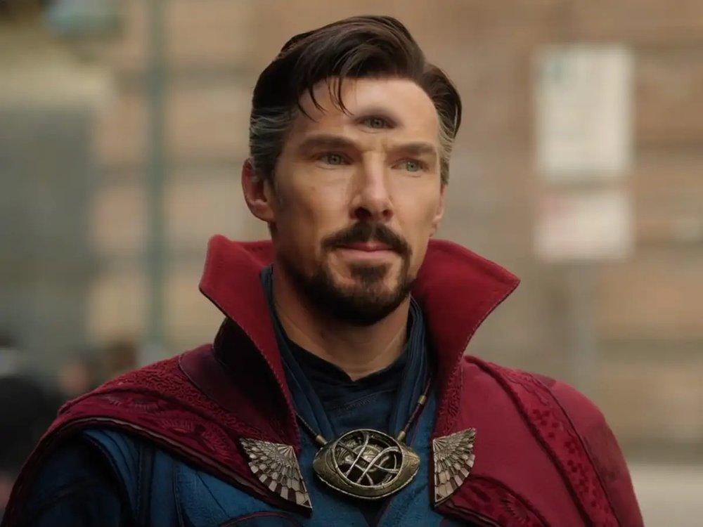
Choosing the number of levels
- Rule: the deepest level should blur the mask about as much as the size of the region being blended.
- Oraple and planets: with 6 levels the last mask level is blurred by about 37 pixels, which suits a seam that crosses the whole image.
- Third eye: the eye mask is only 108 × 44 pixels, so I compared 2, 4 and 6 levels:
- 2 levels: the eye's coarse shading is pasted in almost unchanged, and its outline shows as a dark patch.
- 6 levels: the coarse levels of the small mask spread into a faint, wide blob, so the eye loses its own shading and looks washed out.
- Choice: 4 levels, which keeps the eye's shadows and blends it smoothly into the forehead.
The Laplacian stack of my favourite blend
As in Figure 10 of the paper: for each level, the masked contribution of each image and their sum, zoomed on the forehead. Levels 0–2 are frequency bands (0 = mid-gray); level 3 holds the remaining low frequencies; the last row sums all levels.
- Fine levels (L0, L1): the lashes and iris are inserted inside the sharp outline of the mask.
- Low-frequency level (L3): the mask has spread into a soft oval, so the eye's surroundings take on the forehead's skin tone and no edge is visible around the new eye.
Bells & whistles: color blending
All blends above are in color; here each is also done in grayscale with the same mask and levels.
Color makes the blend more convincing
- Grayscale: the oraple is just a darker and a lighter half with different textures, which could be one unevenly lit fruit; Earth and Mars become two gray textures.
- Color: the red-to-yellow and blue-to-orange changes are what make each result read as one object with two natures.
Why the blend handles color well
- Color is where a seam would be most visible, and it lives in the low frequencies (as in 2.2), so it is mixed in the coarsest levels, over the widest band.
- In the third eye, this is what matches the inserted eye's slightly different skin tone to the forehead.
- All three channels use the same mask weights, so the colors along the seam are always a mix of the two images' colors and no new hue appears.
What I learned
The most important thing I learned: almost everything in this assignment is the same operation, a Gaussian blur, and the real decision every time is which frequencies to keep, remove or mix.
- One filter, many tools. The Gaussian removes noise before differentiating (DoG), its complement adds detail back (unsharp masking), splitting an image at one cutoff makes a hybrid, and splitting it into many bands makes blending seamless. Once I saw them all as "pick a band", choosing a parameter became a question about the picture, not trial and error.
- σ is a scale, and it has to match the content. The edge threshold depended on the blur; the hybrid cutoffs had to separate Derek's face from the cat's fur; and the blend only looked right when the deepest level's blur matched the size of the region (6 levels for the planets, 4 for the small eye). The same σ that works for one image can fail on another.
- Perception follows frequency. A hybrid works because we can't resolve fine detail from far away. Sharpening "works" because we read edge contrast as focus, even though the PSNR test showed that it can't restore detail the blur removed. And the color experiments in both 2.2 and 2.4 pointed the same way: color lives in the low frequencies, so that is where it helps.
- Math identities are practical. Associativity let me replace two convolutions with one DoG filter; separability made the large Gaussians of Part 2 ~25× cheaper; and the telescoping Laplacian stack rebuilds the image exactly, which gave me a built-in correctness check.
- Details at the borders matter. Zero padding made the image frame look like an edge, the FFT showed a bright cross from the image borders, and alignment padding needed care so that the heads weren't cropped off. Implementing the convolution from scratch is what made me look at these.
Summary
- Convolution: zero-padded 4-loop and 2-loop numpy versions, identical to
convolve2dup to rounding (max difference 1e-6); everything after Part 1.1 usesconvolve2dwith mirrored borders. - Edges: finite differences with threshold 0.25; derivative of Gaussian (σ = 1.5, 11×11) with threshold 0.10; the one- and two-convolution versions agree to 1e-15. Gradient orientation as HSV hue with my own polynomial arctan.
- Sharpening: unsharp mask
(1 + α)e − αG, σ = 2, α = 1.5. - Hybrids: Derek + Nutmeg (aligned with the ported
align_images), cat + jaguar, Maine coon + owl; σ_low = 7, σ_high = 4 (cutoffs 0.027 / 0.047 cycles/pixel); color works best in the low-frequency image. - Stacks and blending: σ = 2 doubling per level; 6 levels for the oraple and Earth + Mars, 4 for the third eye; the mask gets its own Gaussian stack (p. 230); all blends in color.